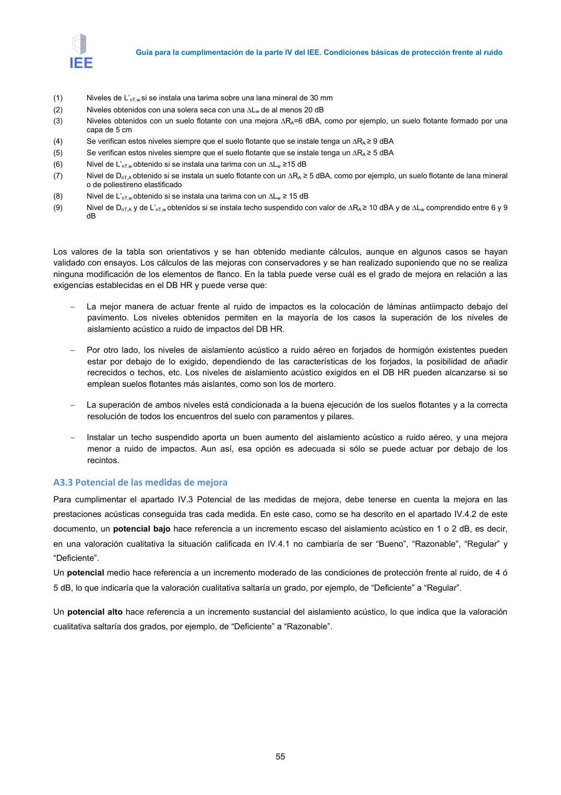

GUIA · A3.3 Potencial de las medidas de mejora · versión 2016-11-01 · capa guia
Formatos: JSON compacto · Markdown · PDF fuente
Ámbito del documento · texto del ámbito · documento y tablas
Tipo: figuras · nivel 3 · sección estimada: Anejo 3 Valoración del aislamiento acústico de elementos de separación horizontales y sus · padre: a0043
A3.3 Potencial de las medidas de mejora Para cumplimentar el apartado IV.3 Potencial de las medidas de mejora, debe tenerse en cuenta la mejora en las prestaciones acústicas conseguida tras cada medida. En este caso, como se ha descrito en el apartado IV.4.2 de este documento, un potencial bajo hace referencia a un incremento escaso del aislamiento acústico en 1 o 2 dB, es decir, en una valoración cualitativa la situación calificada en IV.4.1 no cambiaría de ser “Bueno”, “Razonable”, “Regular” y “Deficiente”. Un potencial medio hace referencia a un incremento moderado de las condiciones de protección frente al ruido, de 4 ó 5 dB, lo que indicaría que la valoración cualitativa saltaría un grado, por ejemplo, de “Deficiente” a “Regular”. Un potencial alto hace referencia a un incremento sustancial del aislamiento acústico, lo que indica que la valoración cualitativa saltaría dos grados, por ejemplo, de “Deficiente” a “Razonable”.

PDF fuente redistribuible: copia fiel enlazada en esta página (SHA256 verificado).